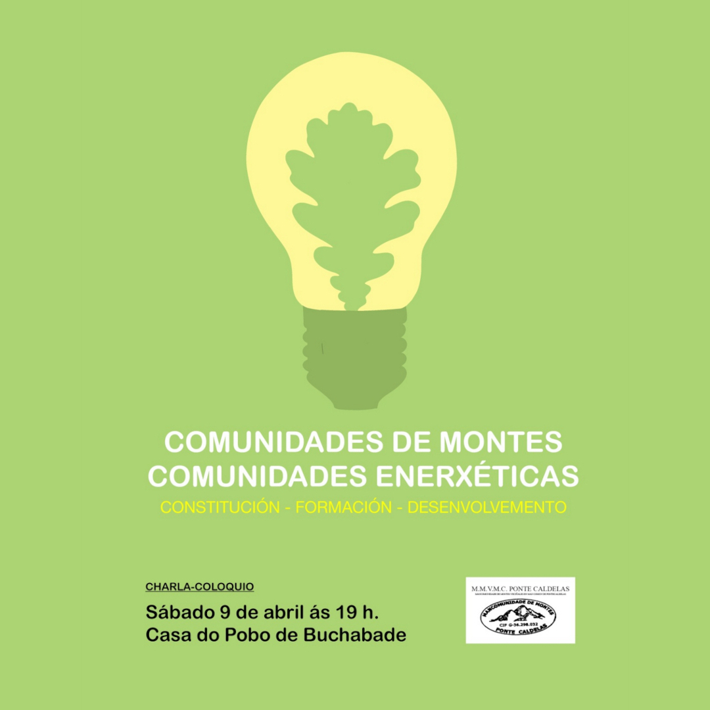
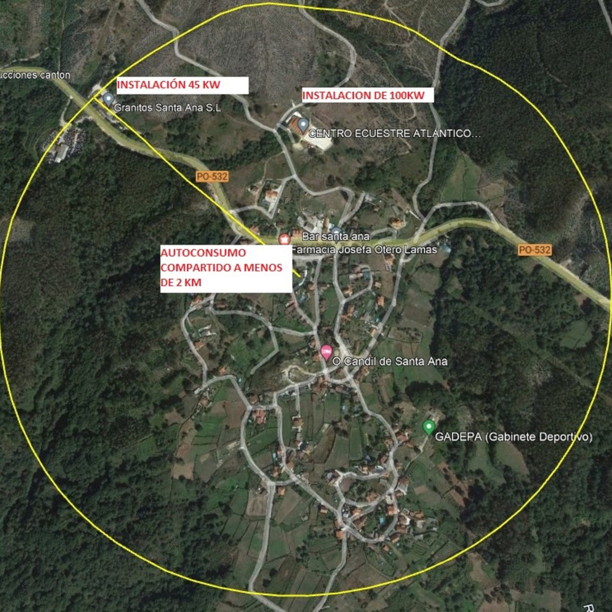
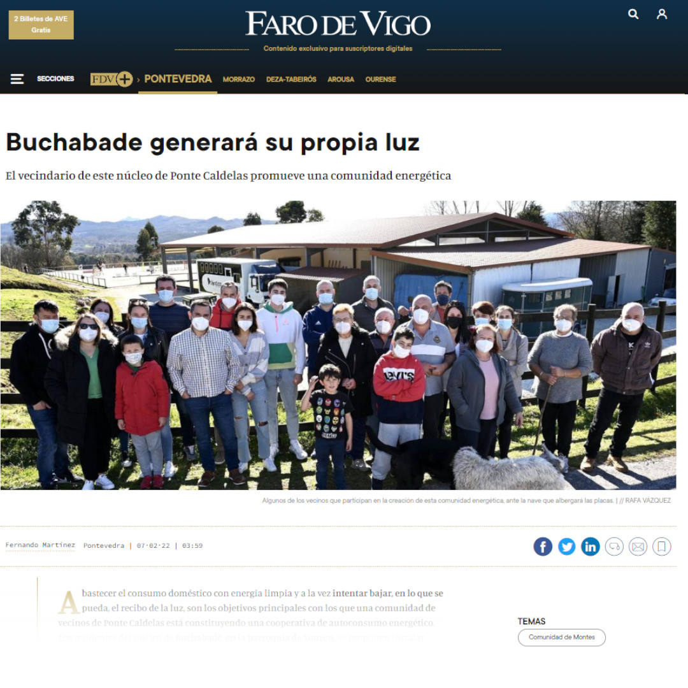

A Comunidade Enerxética
CLER: Comunidade Local de Enerxías Renovables de Buchabade.
De que vai isto da CLER de Buchabade?
Estamos nos albores dun novo tempo en canto ao tema enerxético. As reservas de gas e petróleo están lonxe e cada día custa máis extraer estes combustibles: escasean, provocan conflictos e guerras polo seu dominio, e están moi concentrados na xeografía do planeta. O planeta está sofrendo un cambio climático acelerado a raíz de do CO2 que botamos á atmosfera cada vez que queimamos gás e derivados do petróleo. A CLER de Buchabade nace neste contexto xeral, o aveiro de disposicións da Comunidade Europea que permiten e fomentan un novo paradigma. Cidadáns, pequenas e grandes empresas, concellos, póñanse a producir enerxías renovabeis xa!
Como xorde a comunidade enerxética?
A idea xorde nunhas charlas divulgativas no marco da invasión de proxectos eólicos e das súa infraestructura asociada. Pareceunos unha alternativa máis xusta, equitativa e de menor impacto para a producción de enerxía renovable. Tamén moi acorde coa cultura común dos veciños e coa tradición de apropiación dos recursos pola veciñanza. Axiña nos puxemos un grupo promotor a traballar: asembleas informativas, estudios técnicos, colaboración con moitas entidades... Pero o máis importante foi ter unha Comunidade de Montes unida, con confianza na súa directiva e solvente económicamente. Tan só uns seis meses despois e cuns 700€ de gasto, tiñamos montado o corpo xurídico para poder falar da CLER de Buchabade.
Quenes somos agora?
Somos unha cooperativa de consumo, con escritura pública, estatutos, e unha rectora. Os socios son 80 persoas físicas, case todas comuneiras de montes, tres PYMES, a propia CMVMC e tamén a Comunidade de Usuarios de Augas De Buchabade.
Que queremos facer?
Noso obxetivo a curto prazo é dotarnos dun autoconsumo compartido eléctrico que acade o óptimo para cada un dos socios da Cooperativa e así rebaixar o máximo que poidamos con tecnoloxía fotovoltaica as facturas da luz de cada un destes membros. Para elo temos dous proxectos diferenciados: un na cuberta do Centro Hípico Atlántico, e outro na nave da Serra de Pedra Granitos Santa Ana. No primeiro 100 kw e na serra aproximadamente uns 45 KW. A longo prazo gostaríamos diversificar a producción con outras tecnoloxías coma minieólica ou minihidráulica e unha xestión común da leña.
Novas da Comunidade de Enerxética
Directiva
Presidente

Nome Apelido1 Apelido2
Vicepresidente
Nome Apelido1 Apelido2
Secretario
Nome Apelido1 Apelido2